La energía es aquello que provoca cambios físicos y químicos en la materia, y también lo que nos permite poner un cuerpo en movimiento.
-
01
Fuentes de energía y su transformación
Open or CloseObserva las diferentes formas de energía que se encuentran en la imagen. Recuerda que las plantas, por medio de la fotosíntesis, transforman la energía del Sol en energía química. Al consumir estos vegetales, obtenemos esta energía y la aprovechamos para realizar las funciones que sostienen nuestra vida.
Pie de imagen Observa las diferentes formas de energía que se encuentran en la imagen. Recuerda que las plantas, por medio de la fotosíntesis, transforman la energía del Sol en energía química. Al consumir estos vegetales, obtenemos esta energía y la aprovechamos para realizar las funciones que sostienen nuestra vida. En nuestro caso, los alimentos que tomamos nos proporcionan energía para realizar las actividades diarias como caminar, jugar, estudiar, hacer deporte.
Los alimentos que se consumen producen la energía necesaria para poder escalar una montaña, debido a que la energía química de los alimentos se transforma en energía mecánica en el cuerpo humano.
También los medios de transporte en los que viajas necesitan energía para funcionar, la cual obtienen de los combustibles.
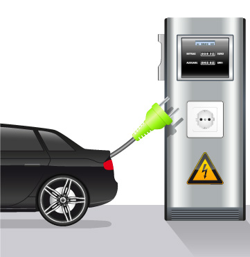Debido a que las reservas de los combustibles fósiles se están agotando, el ser humano ha tenido la necesidad de encontrar nuevas formas de energía que permitan resolver la demanda de gasolina. Algunos automóviles aprovechan la energía eléctrica para su funcionamiento.
La energía
La energía del Sol calienta e ilumina la Tierra, y permite el crecimiento de todos los seres vivos. La energía de la luz del Sol juega un papel importante en la producción del alimento en las plantas en el proceso conocido como fotosíntesis. La energía del Sol termina almacenada, como energía química, en los enlaces de los compuestos que se forman en este proceso.
01.1Características de la Energía
La energía tiene propiedades que los humanos aprovechan en numerosos dispositivos y máquinas para realizar diversas actividades:
- La energía se conserva: la energía no aparece de la nada ni desaparece. En toda transformación, la energía que pierde un cuerpo, la gana otro. Esta es una ley general que se conoce como Principio de conservación de la energía. La energía puede cambiar de una forma a otra, pero la cantidad total se mantiene.
- La energía se transforma: una forma de energía se puede convertir en otra. Por ejemplo, la energía eléctrica se transforma en energía térmica en un secador de cabello. "La energía no se crea ni se destruye, sino que se transforma".
Observa la imagen. Piensa cómo se transforma la energía eléctrica en energía térmica en un secador de cabello.
- La energía se transfiere: la energía puede pasar de un cuerpo a otro. Esto se conoce como transferencia de energía y puede ocurrir de dos formas: como calor o como trabajo. El gas que arde en el fogón de la cocina transfiere calor a una vasija con agua. La gasolina que arde en el motor de un carro transfiere trabajo a las ruedas haciendo que se desplace. El calor y el trabajo son energía en movimiento.
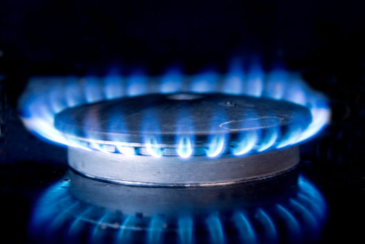La energía se transfiere como calor producido por la llama a las ollas que se ponen sobre el fogón, de allí esta se transfiere a los alimentos que se encuentran dentro del recipiente.
- La energía se almacena: la energía se puede almacenar para utilizarse después, como ocurre con las pilas de los celulares o las baterías de los carros, o con la energía química almacenada en las sustancias que producen las plantas al realizar la fotosíntesis.
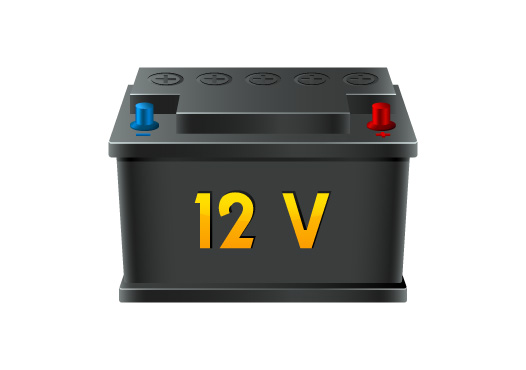La energía se almacena en baterías y es utilizada en el sistema eléctrico de los carros. La cantidad de energía de una batería es limitada, por lo que debe recargarse o reemplazarse. Se dice que las cosas tienen energía si permiten realizar trabajo; en este caso, una batería cargada dispone de la energía para poner un carro en movimiento.
- La energía se degrada: en todos los procesos la energía puede transformarse en otra forma de energía. Sin embargo, parte de esta energía puede disiparse en forma de calor, esto significa que la energía se degrada.
La energía eléctrica se transforma en luz pero parte de esta energía se disipa en forma de calor.
¡Recuerda!
La energía es aquello que provoca cambios físicos y químicos en la materia, y también lo que nos permite poner un cuerpo en movimiento.
01.2Consolidación
Actividades para consolidar lo que has aprendido en esta sección.
Practica
-
02
Tipos de energía
Open or CloseConocer la energía y de dónde se obtiene es esencial para que sepamos hacer un buen uso de ella.
La energía se manifiesta de distintas formas según la posición, el movimiento, la temperatura, la masa o la composición de los cuerpos, entre otras. De acuerdo con esto, podemos distinguir diversos tipos de energía: energía mecánica, eléctrica, térmica, química y nuclear.
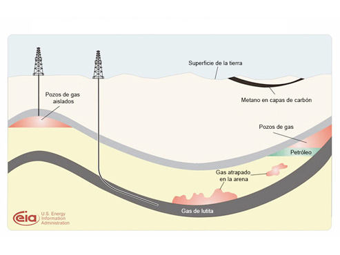Si observas la imagen podrás advertir varios tipos de energía, los cuales son generados a partir la energía mecánica que contiene el río debido al movimiento del agua.
02.1La energía mecánica
La energía mecánica es aquella que tiene un cuerpo de acuerdo con el estado inercial.
Se entiende por inercia la tendencia de un cuerpo a permanecer en el estado de reposo o movimiento en el cual se encuentra. De acuerdo con lo anterior, la energía mecánica se puede subdividir en energía cinética y potencial.
02.1.1Energía cinética
02.1.2Energía potencial
La energía potencial es aquella que tiene un cuerpo debido a su posición, con respecto a un sistema de referencia. La energía potencial de un cuerpo es directamente proporcional a la masa del mismo y a la altura a la cual se encuentre. A mayor altura, mayor es la energía potencial. Por esto, la energía potencial de un clavadista es mayor cuanto más distante se encuentre del agua. En cuanto se lanza y empieza a descender, su energía potencial decrece.
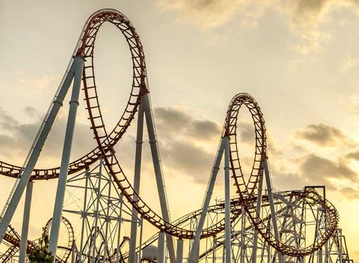El recorrido de un carrito en la montaña rusa alterna su energía entre la potencial y la cinética, esto obedece a que la energía mecánica se conserva en el recorrido pues es la suma de la energía potencial y la cinética.
02.1.3Conservación de la energía mecánica
En un sistema ideal, donde no existan fuerzas de rozamiento, la energía mecánica se conserva y, por tanto, la energía potencial puede transformarse en cinética y viceversa. Al caer un cuerpo, la energía potencial disminuye y aumenta la cinética, manteniéndose el valor total de la energía mecánica.
La energía mecánica
La energía mecánica está formada por la suma de la energía cinética y la energía potencial. Si se consiguiera un sistema en el que no existieran pérdidas de energía, una de ellas proporcionaría energía a la otra, es decir, se retroalimentaría de forma autónoma.
Energía Mecánica = Energía Potencial + Energía Cinética
EM = EP + EC
Aprende
02.2La energía eléctrica
La energía eléctrica es una de las formas de energía más empleadas en la actualidad. Si miras a tu alrededor podrás darte cuenta de cómo depende tu vida de la energía eléctrica. Con ella funcionan los electrodomésticos y gran parte de la iluminación en las casas y los edificios.
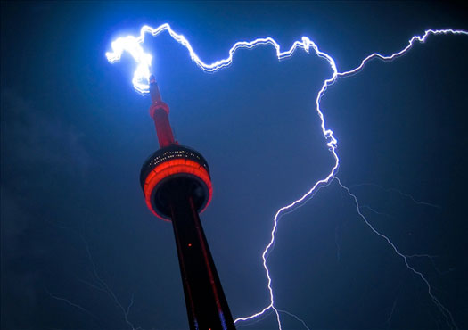Los rayos que se producen durante una tormenta son una manifestación de la energía eléctrica en la naturaleza. Estas descargas se producen entre dos nubes o entre una nube y la tierra. Aquí la descarga se hace a través de un pararrayo.
Existen diversas formas de generar energía eléctrica, por ejemplo a partir del movimiento del agua (hidroeléctrica) o del calor del agua (geotérmica). En el siguiente enlace encontrarás una explicación detallada del funcionamiento de una termoeléctrica que transforma la energía potencial y cinética del agua en energía eléctrica. [VER]
02.2.1Qué es la electricidad
Cuando enciendes la televisión, "la electricidad" que pasa a través del cable es en realidad un flujo de cargas negativas (electrones). El flujo de electrones se conoce como corriente eléctrica.
La electricidad es una forma de energía que se manifiesta en la naturaleza, debido a la estructura de la materia.
La materia está constituida por partículas con cargas positivas y negativas, las cuales tienden a mantenerse en equilibrio, es decir, el número de cargas positivas (protones) se hace igual al número de cargas negativas (electrones).
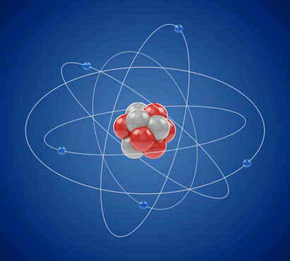El número de electrones -cargas negativas- es igual al número de protones -cargas positivas-.
DESTACADO
La materia está formada por átomos. Los átomos están constituidos por tres partículas fundamentales: protón, electrón y neutrón. El protón tiene carga eléctrica positiva y el electrón carga eléctrica negativa. El neutrón no tiene carga eléctrica. Los protones y neutrones se hallan en el núcleo y los electrones giran alrededor de este. Se podría decir que los electrones se mantienen volando alrededor del núcleo como una mosca alrededor de una fruta madura.
Si te peinas en un día seco, puedes observar que el cabello se separa y es atraído por el peine, esto se debe a la carga que adquiere al pasar el peine. Cuando los materiales se comportan así, decimos que se han cargado eléctricamente.
Un globo o un saco de lana son cuerpos neutros, pero adquieren carga positiva o negativa si se frotan. Cuando un objeto resulta cargado porque ha adquirido cargas positivas o negativas, estas no se han creado, simplemente se han movido de un cuerpo a otro.
La carga eléctrica es una propiedad de la materia que hace que dos cuerpos se atraigan o se rechacen entre sí. Cargas eléctricas del mismo signo se repelen y cargas eléctricas de signo contrario se atraen. Por esta razón, en el ejemplo arriba citado, el peine atrae al cabello.
En algunos materiales, los electrones más alejados del núcleo se hallan débilmente atraídos por los protones y pueden saltar de un átomo a otro.
El átomo que pierde electrones adquiere carga eléctrica positiva (+) y el que los recibe, al tener un exceso de electrones, tiene carga eléctrica negativa (-). Por tanto, para adquirir carga eléctrica, los átomos tienen que ganar o perder electrones.
A diario puedes experimentar la transferencia de carga entre los objetos. Por ejemplo, cuando caminas y las suelas de tus zapatos rozan el tapete, estas adquieren cargas negativas (electrones) mientras el tapete, cargas positivas. De la misma manera como los cuerpos adquieren carga también la pierden, fácilmente.
En el siguiente enlace puedes ampliar tus conocimientos relacionados con las cargas eléctricas [VER]
02.3La energía térmica
La energía térmica o calórica es la que desprenden los cuerpos en forma de calor. Pasa de los cuerpos de mayor que tienen mayor a los de menor temperatura. Por ejemplo, una estufa transmite energía térmica.
DESTACADO
La energía térmica está asociada a los movimientos de las partículas que constituyen la materia. Un cuerpo tiene más energía térmica cuanto mayor es su temperatura.
02.3.1El calor y la temperatura
El calor es la energía térmica que puede pasar de un cuerpo a otro. Se transfiere del que tiene mayor temperatura al de menor temperatura, es energía en movimiento. Se mide en julios (J).
La temperatura es una propiedad de la materia que indica la cantidad de energía cinética promedio de las partículas de un cuerpo. Se mide en grados centígrados (°C), en Kelvin (K) o grados Fahrenheit (°F).
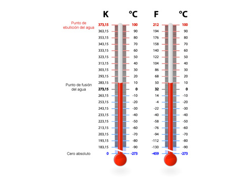Observa la comparación de diferentes escalas de temperatura. Todas las escalas utilizan el punto de fusión y el punto de ebullición del agua para relacionar los sistemas utilizados para la medición de la temperatura. Estos son: Celsius (Cº), Kelvin (K) y Fahrenheit (ºF).
Los grados centígrados se utilizan para medir la temperatura de sucesos cotidianos, por ejemplo, la temperatura ambiente, la del cuerpo humano, la de un horno doméstico. La temperatura en Kelvin se utiliza para realizar trabajos científicos y tecnológicos.
02.4La energía química
Esta energía se manifiesta en las reacciones químicas y muchas de ellas se producen en los procesos que mantienen la vida de los seres. Por ejemplo, mediante el proceso de respiración celular muchos seres vivos obtienen la energía química contenida en el alimento. En este caso el oxígeno se combina con la glucosa y de esta manera se libera la energía almacenada en sus enlaces. En el proceso de fotosíntesis, en cambio, las plantas usan la energía de la luz del Sol. En el enlace encontrarás una explicación del proceso de transformación de energía solar en química [VER]
Un automóvil funciona gracias a la energía química del combustible, la cual se manifiesta al quemarse el combustible en el motor. La combustión permite aprovechar la energía contenida en la gasolina con la que funciona un carro.
En las pilas y las baterías se almacena energía química que se transforma en energía eléctrica para hacer funcionar distintos aparatos. En el siguiente enlace encontrarás un experimento sencillo para hacer una curiosa pila con limones [VER].
02.5La energía nuclear
02.5.1La fisión nuclear
Es el proceso mediante el cual el núcleo de un átomo grande, como el de uranio, se desintegra dividiéndose en dos más pequeños y liberando una gran cantidad de energía. Este proceso se lleva a cabo de forma controlada en las centrales nucleares productoras de electricidad.
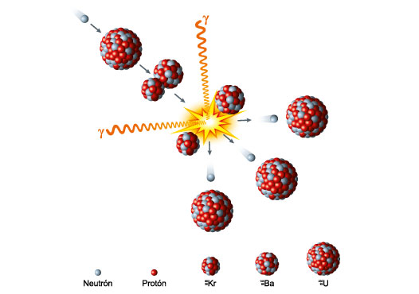Rompimiento del núcleo de un átomo por el bombardeo con neutrones. Este proceso se denomina fisión nuclear.
02.5.2La fusión nuclear
Es el proceso mediante el cual los núcleos de dos átomos pequeños se unen para formar uno más pesado. La energía del Sol proviene de la fusión de átomos de hidrógeno en su interior para convertirse en helio.
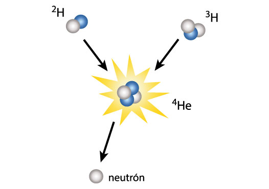La formación de un núcleo complejo a partir de núcleos sencillos es el proceso denominado fusión nuclear. Mediante este método se obtiene una gran cantidad de energía calórica que luego se puede transformar en energía eléctrica.
En el siguiente link encontrarás el funcionamiento de una planta nuclear y su proceso de transformación en energía eléctrica [VER]
Reacciones nucleares
La fisión es el proceso mediante el cual el núcleo de un átomo grande se desintegra dividiéndose en dos más pequeños y liberando una gran cantidad de energía.
La fusión nuclear es el proceso mediante el cual los núcleos de dos átomos pequeños se unen para formar uno más pesado.
Aprende
02.6Consolidación
Actividades para consolidar lo que has aprendido en esta sección.
Aprende
Practica
-
03
Fuentes de energía
Open or CloseLa mayor parte de la energía que usamos en la Tierra proviene del Sol. La energía del Sol nos calienta, forma el viento, permite la fotosíntesis, e hizo posible la formación de petróleo en nuestro planeta. Las fuentes de energía son los recursos naturales a partir de los cuales obtenemos energía.
Las fuentes de energía se clasifican en renovables y no renovables.
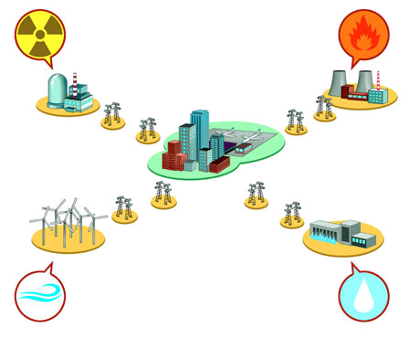Observa diferentes fuentes de energía utilizadas por el ser humano. Obtenemos energía a partir del viento, de las caídas de agua, de las mareas, del calor del Sol, de los materiales radiactivos, de fuentes termales, o por combustión de petróleo o biomasas.
Practica
03.1Las fuentes de energía renovables
Las fuentes de energía renovables son aquellas que no se agotan o que se regeneran de forma natural; se consideran limpias o no contaminantes porque causan un impacto ambiental mínimo.
Algunas de las fuentes de energía renovables son: la solar, la eólica, la hidráulica, la geotérmica y la biomasa, las cuales han sido utilizadas por el hombre a través de la historia.
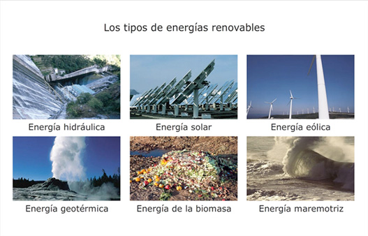Son energías renovables son la hidráulica, la solar, la eólica, la geotérmica, la de biomasa y la mareomotriz.
03.1.1La energía solar
La energía solar es la producida por el Sol, que es la fuente natural más importante para la transformación de todas las otras formas de energía en la Tierra. Esta llega en forma de energía radiante.
La energía solar es utilizada por todos los seres vivos en nuestro planeta, las plantas y algas la transforman en energía química durante el proceso de la fotosíntesis.
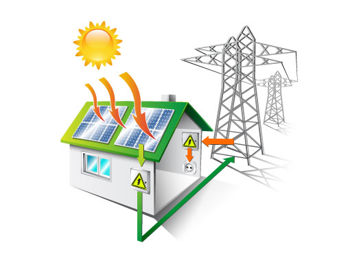En algunos hogares se utiliza la energía solar para calentar el ambiente y el agua para las duchas, y así sustituir o ahorrar la energía eléctrica que se genera en las hidroeléctricas y que tiene mayor impacto ambiental.
La energía lumínica: la luz del Sol nos permite ver durante el día y activa ciertas reacciones químicas en nuestros cuerpos. Las plantas la utilizan para producir su alimento. Los seres humanos la aprovechamos también para producir electricidad mediante placas fotovoltaicas. La energía térmica: los rayos del Sol calientan la superficie terrestre y proporcionan el calor necesario para que se desarrolle la vida en la Tierra. Los humanos aprovechamos la energía térmica de hornos y cocinas solares y de los calentadores solares de agua.
¡Recuerda!
El Sol es la fuente de energía más importante para la Tierra, ya que sin su presencia no se darían otros tipos de energía y, por tanto, no existiría la vida en el planeta. La energía que procede del Sol se denomina energía solar y le proporciona a la Tierra energías lumínica y térmica, es decir, luz y calor.
Aprende
Practica
03.1.2La energía eólica
La energía eólica es la producida por el movimiento del aire en la atmósfera. Este movimiento se produce por el calentamiento desigual de las masas de aire, lo que hace que estas se desplacen de un punto a otro y originen los vientos.
La energía eólica aprovecha la energía cinética del viento y la transforma en energía eléctrica al mover las aspas de los molinos.
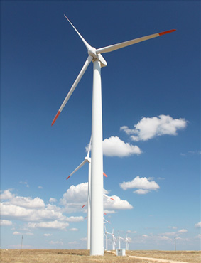Los aerogeneradores transforman la energía eólica o del viento en energía eléctrica. Se agrupan en parques o centrales eólicas.
La energía eólica no contamina y es inagotable, pero tiene como inconveniente que depende de las ráfagas de viento, que no son constantes. Además, los aerogeneradores provocan un gran impacto visual y, por la altura que alcanzan, pueden interferir en las rutas migratorias de las aves.
Aprende
Practica
03.1.3La energía hidráulica
La energía hidráulica es la que se obtiene por el aprovechamiento de las energías cinética y potencial del agua, como la existente en las corrientes y en los embalses. Se puede transformar a diferentes escalas, sin embargo, la utilización más común es la transformación en energía eléctrica a través de la central hidroeléctrica.
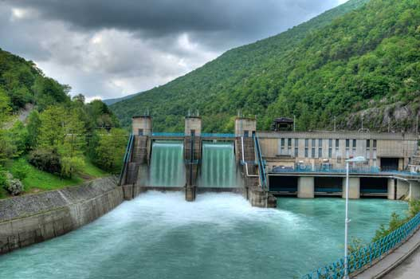La energía del agua se transforma en eléctrica en las centrales hidroeléctricas. Esta es utilizada para el funcionamiento de los equipos eléctricos que usamos diariamente.
En el siguiente enlace encontrarás una explicación detallada del funcionamiento de una hidroeléctrica [VER]
La energía hidráulica
La energía hidráulica es considerada una fuente de energía renovable; sin embargo, la construcción de las hidroeléctricas trae como consecuencia el deterioro de los ecosistemas por la desviación de los cauces de los ríos, la erosión de los suelos, la alteración de los ritmos de vida acuática y terrestre, y el desplazamiento de poblaciones y comunidades. [VER]
03.1.4La energía geotérmica
La energía geotérmica es aquella que se obtiene mediante el aprovechamiento del calor del interior de la Tierra.
La temperatura al interior de la Tierra aumenta con la profundidad. A diferentes profundidades existen reservorios de agua conocidos como capas freáticas o acuíferos, en las que el agua puede estar muy caliente.
La presión generada por el vapor de agua que asciende origina géiseres y aguas termales en la superficie. Si el reservorio tiene una alta temperatura el vapor puede ser utilizado para la generación de corriente eléctrica.
Aprende
03.1.5La energía de la biomasa
La energía de la biomasa es la generada por el aprovechamiento de la materia orgánica procedente de los residuos de explotaciones ganaderas, agrícolas y forestales, y de los desechos de jardines, parques y bosques.
Esta energía también se obtiene a partir de cultivos destinados exclusivamente a la obtención de biomasa, como la palma aceitera, los cuales reciben el nombre de cultivos energéticos. Toda esta materia orgánica se quema para producir energía térmica, o se transforma por fermentación o gasificación en otros combustibles como alcohol y biogás. Estos, a su vez, se usan para generar electricidad en las centrales de biomasa.
El aserrín, producto desecho en los aserraderos, se convierte en biomasa, fuente de energía.
03.2Las fuentes de energía no renovables
03.2.1Los combustibles fósiles
Los combustibles fósiles son los que se originan por la descomposición natural de la materia orgánica a lo largo de millones de años, estos son: el petróleo, el carbón mineral y el gas natural.
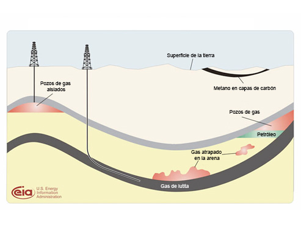El petróleo, el carbón y el gas que se explotan en la actualidad se generaron por la acumulación de materia orgánica (plantas y restos de animales y otros seres vivos) al interior de las capas de la Tierra, y que por esto, permanecieron sometidos a una gran presión, por miles y miles de años. Estas sustancias guardan una gran cantidad de energía, por lo que son los combustibles más usados en nuestro planeta.
La energía obtenida de los combustibles fósiles produce gran contaminación ambiental debida a la acumulación de gas carbónico en la atmósfera, lo cual incide en el calentamiento global.
Aprende
03.2.2Los combustibles nucleares
Los combustibles nucleares son los que se generan por la descomposición radiactiva de algunos elementos como el uranio, poco abundante en la naturaleza, y el plutonio, que se produce en los laboratorios.
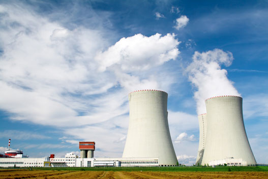Los materiales radiactivos naturalmente producen calor. Las plantas nucleares utilizan los procesos de fusión y fisión para la producción de energía eléctrica.
La generación de energía mediante combustibles nucleares no provoca contaminación directa, pero genera residuos radiactivos de alta peligrosidad, que deben ser almacenados en lugares especialmente acondicionados y bajo estrictas normas de seguridad.
Practica
03.3Consolidación
Actividades para consolidar lo que has aprendido en esta sección.
Aprende
-
04
Competencias
Open or ClosePon a prueba tus capacidades y aplica lo aprendido con estos recursos.
-
Fin de unidad:
Open or Close
repaso